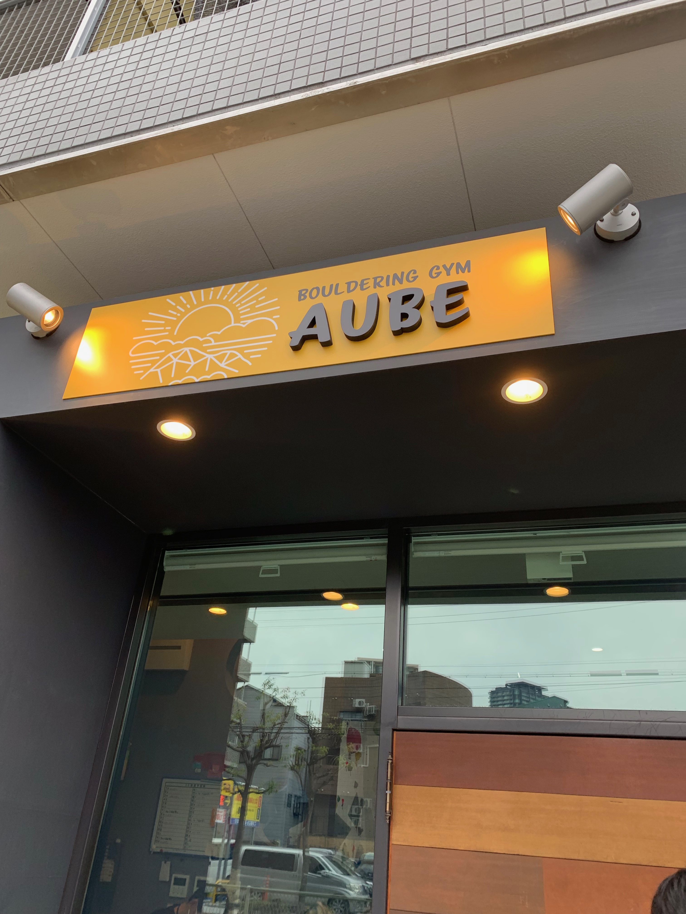
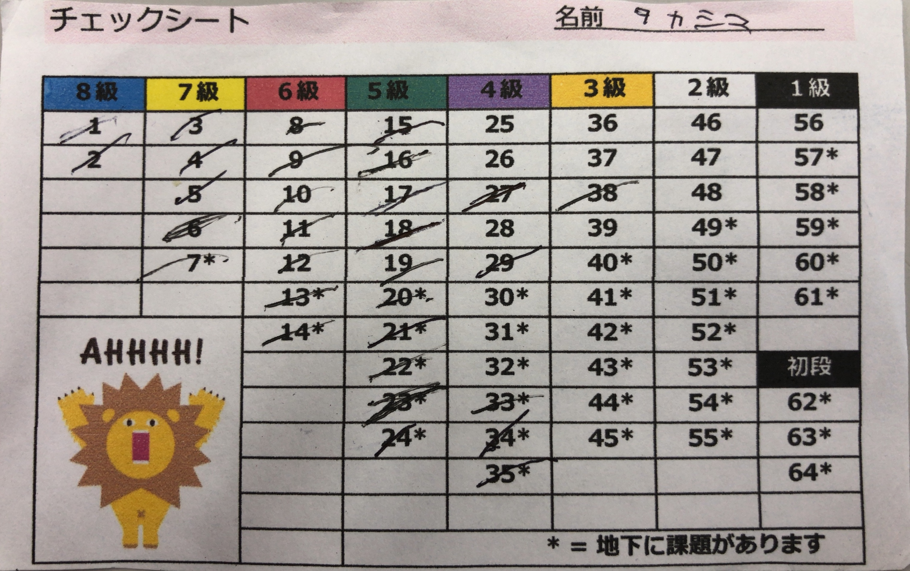

ゴールデンウィークの出来事を紹介します
まず、1日目は友達と福島にあるボルダリングジム「AUBE」にいきました。
ボルダリングは半年ほど前から始めて、週に1回くらいのペースで行っています。
このジムの他にも、

ここのジムでは前から出来なかった課題がいくつかあったのでそれに挑戦し、目標であった5級を完登する事が出来ました!

2日目には以前から楽しみにしていた「アベンジャーズエンドゲーム」を見に行きました。 映画は、TOHOシネマズ難波のシアター5でMX4D、吹き替え版で鑑賞しました。 公開してから間もなかったこともあり、ほぼ満席の状態でした。
エンドゲームでアベンジャーズシリーズは一区切り着くということで、今まで出てきた数々のキャラクターの中でも僕が好きなキャラクター Top3を紹介します。
他にも魅力的なキャラクターがたくさん出てきてとても好きなシリーズです。
3日目には高校時代の友達とご飯を食べに梅田にある居酒屋さんにいきました。 久しぶりに高校の友達と会ったので、それぞれの近況報告や高校のときの話で盛り上がりました。 そのときにのんだお酒を紹介します。